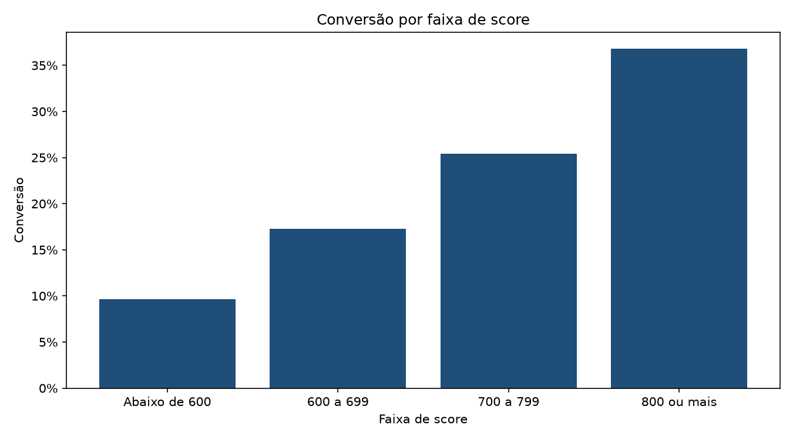
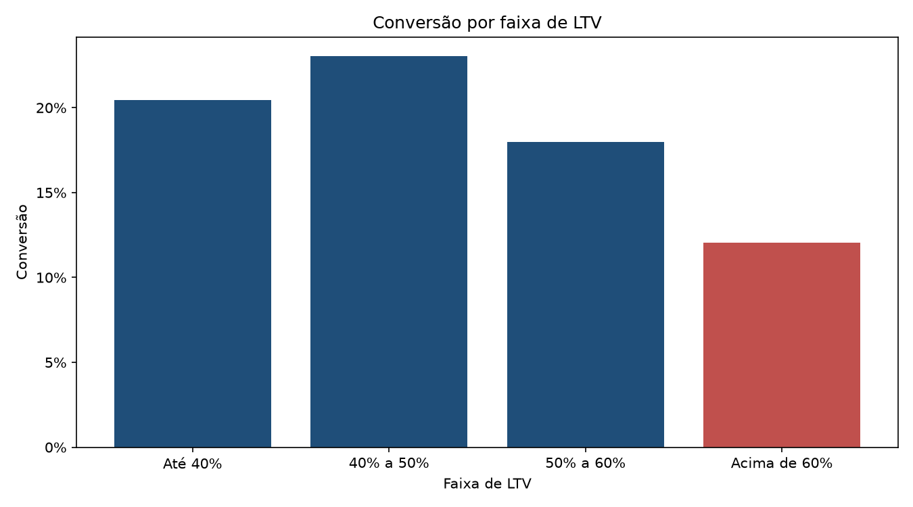
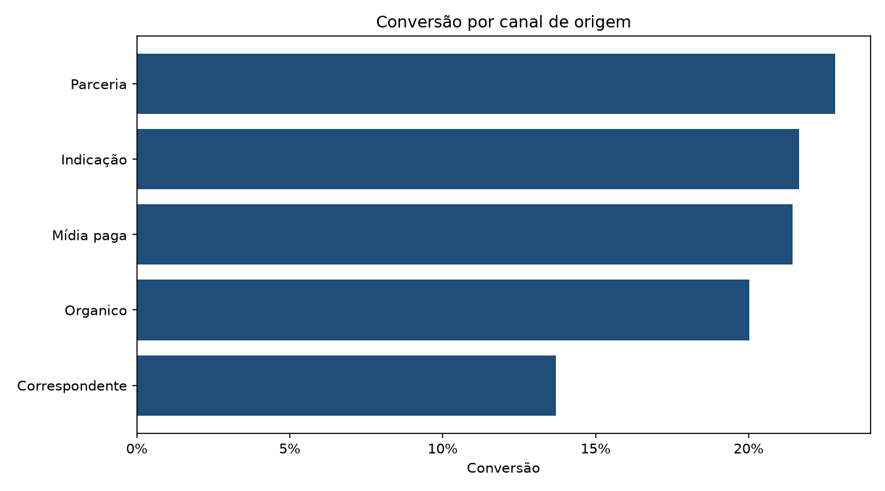
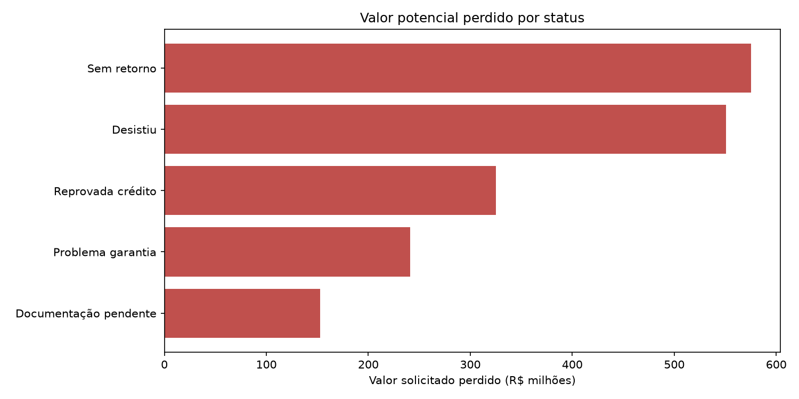
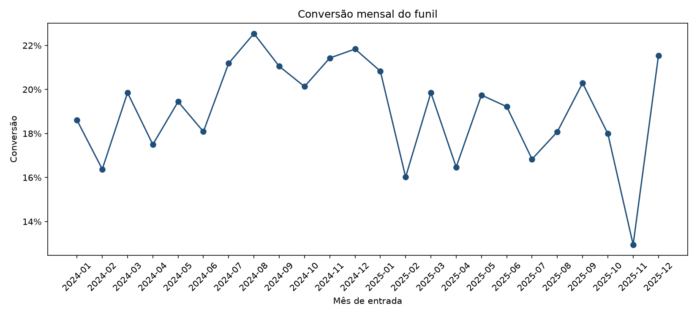

Base analisada: propostas recebidas entre 2024-01 e 2025-12. Registros com tipo de imóvel Terreno foram excluídos conforme o enunciado.
O maior valor potencial perdido está em Sem retorno: R$ 575.142.452,76 distribuídos em 1,495 propostas. Esta métrica usa valor solicitado como proxy de valor potencial, pois a base não contém informação de margem ou receita.
O canal Correspondente apresenta a menor conversão, de 13,7%. A conversão geral é de 19,2%. Isso confirma o sinal agregado da liderança, mas não prova que o canal seja a causa do resultado: o perfil das propostas pode ser diferente.
Nos últimos três meses, a conversão foi de 17,6%, contra 18,2% nos três meses anteriores. A variação é de -0.6%. Há oscilação relevante, portanto a tendência deve ser acompanhada antes de concluir uma queda estrutural.
A conversão aumenta de 9,6% para propostas com score abaixo de 600 para 36,8% na faixa de score 800 ou mais. Score e LTV são associações descritivas nesta análise, não estimativas causais.





| canal_origem | propostas | contratadas | valor_solicitado | conversao |
|---|---|---|---|---|
| Correspondente | 1627 | 223 | 634509727.49 | 0.137062 |
| Organico | 1273 | 255 | 494970317.65 | 0.200314 |
| Mídia paga | 1166 | 250 | 444202613.40 | 0.214408 |
| Indicação | 910 | 197 | 346545044.71 | 0.216484 |
| Parceria | 889 | 203 | 340931920.25 | 0.228346 |
| status_final | propostas | valor_potencial_perdido |
|---|---|---|
| Sem retorno | 1495 | 575142452.76 |
| Desistiu | 1392 | 550645150.99 |
| Reprovada crédito | 844 | 325015801.18 |
| Problema garantia | 608 | 241081946.40 |
| Documentação pendente | 398 | 152565959.29 |
| faixa_ltv | propostas | contratadas | conversao | valor_solicitado |
|---|---|---|---|---|
| Até 40% | 1150 | 235 | 0.204348 | 309497102.48 |
| 40% a 50% | 1959 | 451 | 0.230219 | 689298885.86 |
| 50% a 60% | 1852 | 333 | 0.179806 | 793477149.19 |
| Acima de 60% | 904 | 109 | 0.120575 | 468886485.97 |
| faixa_score | propostas | contratadas | conversao | valor_solicitado |
|---|---|---|---|---|
| Abaixo de 600 | 1060 | 102 | 0.096226 | 4.137315e+08 |
| 600 a 699 | 2779 | 481 | 0.173084 | 1.077977e+09 |
| 700 a 799 | 1765 | 449 | 0.254391 | 6.656162e+08 |
| 800 ou mais | 261 | 96 | 0.367816 | 1.038346e+08 |